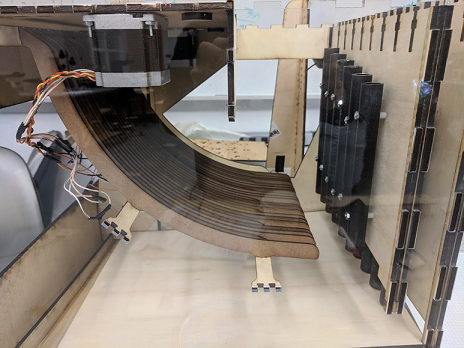
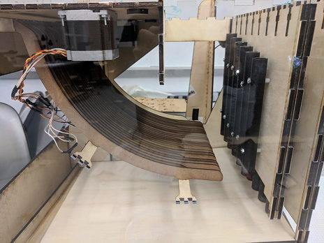

Sprint 4
Being our fourth and final deliverable we needed to polish our design and come up with a working product.
Target Deliverables:
- Get consistent feeding into the song sheet.
- Change our marble collection funnel so it will consistently catch marbles from the wheel
- Turn the wheel
- Get the ramps to work by cutting them out of appropriately sized wood
- Make the base plate steeper
- Mount the pipes correctly
So, this is a lot to change. Let’s see how we did on each.
Get consistent feeding into the song sheet:
Originally the spacers of sprint 3 caused marbles to get stuck on each other and not feed correctly. To counteract this we took out the spacer and turn the feeder in to a wide ball pit (not the fun kind) where the is a long base layer of marbles that provide plenty of opportunity for marbles to fall into the sheet. This method worked significantly better and we found no problems with loading marbles correctly.
Change our marble collection funnel so it will consistently catch marbles from the wheel:
After checking to see where the marbles were missing, we extended the collection tray to account for that area, catching the marbles that missed before.
Make the base plate steeper:
To fix the problem of the marbles not routing into the wheel, we increased the steepness of the base plates. This easily fixed the problem and produced satisfying marble routing towards the wheel.
Turn the wheel:
In sprint three we did not have a turning wheel due to not being able to power the stepper we had. In order to bypass this, we first explored a slightly smaller stepper motor that appeared to have plenty of torque. However, after printing a mount for the stepper and testing it with the wheel we found that although it could turn the wheel, it was not strong enough that we would have faith it would work integrated into the system.
We decided to instead turn the wheel with a found DC motor that gave more torque. After integrating the motor we found it spun the wheel well, in fact too well. At the speed with sufficient torque, the motor spun the large wheel a revolution per second, much too fast for our purposes. To counteract this we coded the motor to only occasionally turn the wheel and coast off of the moment generated in between runs. This worked for a time, but consistent and sudden change in speed caused the shaft to strip the inside of the 3D printed part we used to interface between the shaft and the wheel, disabling the wheel.
Mount the pipes correctly:
With the severe problems of decreased resonation due to improper pipe spacing, we were careful in this sprint to drill holes into pipes so that they would have maximum resonance. After drilling the holes, measuring hole distance from the bottom of the pipe, and inputting the data into the mount to have properly spaced holes, we were able to have mounted pipes that resonated well.
However, we improperly accounted for the change in baseplate angle, causing the baseplate to interfere with the bottom set of pipes. Since the base plate and sides were already cut and we did not have enough wood or time recut all the pieces, we remounted the pipes higher. Unfortunately, this threw off the math associated with the ramps, causing marbles to hit the base plate too early, reducing the reliability of half our notes.
Cutting ramps out of appropriately sized wood:
Last time we cut the ramps out of too thick wood (¼ inch) and sanded them down to get them to fit in the ramp holders. This caused small differences in the heights of the ramps that pushed marbles from their correct path and caused them to either miss or play the wrong note.
To counteract this we cut the ramps out of thinner wood (⅛ inch) in this sprint and adjusted the holders accordingly. With this method the marbles did not jump to the wrong ramp; however, the ramps were too thin and the marbles got stuck in between the sides.
So, we went back to the ¼ inch ramps but this time adjusted the ramp holders so we would not have to sand them down and cause inequalities in ramp height. After cutting and testing these ramps we found we had the same problem as before just to a lesser extent. The space between the ramps was not large enough to reliably keep the marbles in line.
Like the Goldilocks of Engineering, we experimented with our too big and too small ramps and decided on a ramp thickness of 3/16ths as a happy medium. Unlike the Goldilocks of Engineering, we found our medium to be not too happy.
s Despite using the same wood thickness in sprint 2 and having no problems, we still found that marbles occasionally skipped ramps or did not hit. This is likely due to the increased size of our project compared to sprint 2 causing structural problems with the ramp holders and consequently allowing slight bumps to mess up the alignment. However, a large amount of notes missing is due to the the improperly aligned bottom pipes.
Conclusion:
As you can probably guess from our problems with wheel turning and marble routing, the final device was not in working shape. It could successfully feed a song in, but the pipe issues made the song hard to recognize, additionally the wheel was unable to bring the marbles back to the top.
Despite the problems with the final project, the whole process was good learning experience. We all got experience iterating on an integrated, mechanically complex machine and collaborating as a team to deliver a final product.
 
